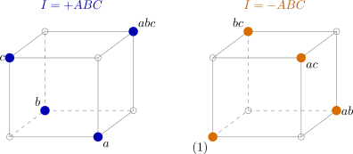

10.1 The one-half fraction
Definition 10.1.1. A one-half fraction of the \(2^k\) design, written \(2^{k-1}\), consists of the \(2^{k-1}\) runs on which a chosen effect column, the generator, has the same sign. If the chosen effect is \(W\) and the sign is \(+\), the fraction is described by the defining relation \(I = W\); with sign \(-\), by \(I = -W\).
For the \(2^3\) design with \(I = ABC\), the half fraction consists of the runs with a \(+\) in the \(ABC\) column: \(a\), \(b\), \(c\) and \(abc\). The complementary half, \(I = -ABC\), is \((1)\), \(ab\), \(ac\), \(bc\). They are the principal and alternate fractions, and together they make up the full design (Figure 11).

In the fraction \(I = ABC\) the columns of the table of signs are no longer all different. On the four runs \(a\), \(b\), \(c\), \(abc\), the \(A\) column is \(+, -, -, +\), and so is the \(BC\) column: the contrasts for \(A\) and \(BC\) are identical. The same holds for \(B\) and \(AC\), and for \(C\) and \(AB\). Two effects whose columns coincide on the runs of a fraction are aliases: the fraction cannot tell them apart.
Theorem 10.1.2. In the fraction defined by \(I = W\), the alias of an effect \(E\) is the generalised interaction \(EW\) (the product with squared letters deleted). The contrast for \(E\), divided by \(2^{k-2}\), estimates \(E + EW\); in the fraction \(I = -W\) it estimates \(E - EW\).
Proof. On every run of the fraction the column of \(W\) is \(+1\). The column of \(EW\) is the elementwise product of the columns of \(E\) and \(W\), so on these runs it equals the column of \(E\). The contrast for \(E\) is therefore also the contrast for \(EW\). Its expectation is the sum of the contributions of all effects whose columns, restricted to the fraction, are \(\pm \) the column of \(E\); these are \(E\) and \(EW\) only, because any other effect \(F\) has \(FE \ne I, W\) and so a balanced column on the fraction. In the fraction \(I = -W\) the column of \(W\) is \(-1\) and the column of \(EW\) is minus that of \(E\). □
So in the \(2^{3-1}\) design with \(I = ABC\), the contrasts estimate \(A + BC\), \(B + AC\) and \(C + AB\). If the two-factor interactions are negligible, the main effects are estimated cleanly; if not, there is no way to tell from these four runs. If both halves are run, the sum and difference of the two estimates separate \(A\) from \(BC\), and so on: this is the idea of the fold-over below.
Example 10.1.3. Suppose only the eight runs of the \(2^4\) experiment of Example 8.4.1 with \(I = ABCD\) had been made: \((1) = 8\), \(ab = 11\), \(ac = 16\), \(bc = 13\), \(ad = 7\), \(bd = 5\), \(cd = 7\), \(abcd = 13\). Each main effect is aliased with a three-factor interaction (\(A = BCD\), and so on), and the two-factor interactions are aliased in pairs (\(AB = CD\), \(AC = BD\), \(AD = BC\)). The estimates, contrasts divided by \(4\), are
| estimate from the half fraction | value | from the full design | sum |
| \(A + BCD\) | \(3.5\) | \(4.125 - 0.625\) | \(3.5\) |
| \(B + ACD\) | \(1.0\) | \(1.875 - 0.875\) | \(1.0\) |
| \(C + ABD\) | \(4.5\) | \(4.875 - 0.375\) | \(4.5\) |
| \(D + ABC\) | \(-4.0\) | \(-3.125 - 0.875\) | \(-4.0\) |
| \(AC + BD\) | \(1.0\) | \(2.125 - 1.125\) | \(1.0\) |
The half fraction reproduces exactly the sums of aliased effects from the full experiment. Because the three-factor interactions are small, it identifies the same important factors, \(A\), \(C\) and \(D\), with half the runs.
Questions on this section
Stuck on something here? Ask below and it stays attached to this topic.